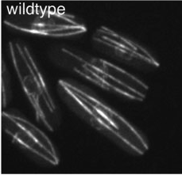

|

S. pombe is an attractive system for studying microtubule assembly and regulation. Microtubules are organized in bundles of mixed polarity in interphase cells. These bundles function in nuclear positioning, cell polarization and organelle transport. These bundles are "self-organizing" and dynamic, and are formed through proteins that bundle the microtubule together, motors and microtubule nucleating proteins. In mitosis, microtubules are assembled inside the nucleus to form the mitotic spindle that segregates the chromosomes and divide the nucleus. The study of these pombe microtubules is revealing many mechanisms that regulate microtubules in structures such as the mitotic spindle and non-centrosomal arrays in animal cells.
Finding the middle: Nuclear Positioning
The interphase microtubules are responsible for positioning the nucleus at the middle of the cell. The bundles are attached to the outside of the nuclear envelope. When a microtubule grows to the cell tip, it continues to grow a bit before shrinking back. During this period, the microtubule pushes itself and the nucleus away from the cell tip. Similar pushing events occur on the other side of the nucleus at the opposing cell tip; therefore a balance of these mechanical forces enable the cell to position the nucleus at the middle (Tran et al., 2001). When the nucleus is offset, microtubules efficiently move it back to the cell middle. Using cell centrifuguation to move the nucleus, we studied the molecular basis of the nuclear centering. We found that the short microtubules actually push more efficiently than longer ones, which may lead to more efficient recentering (Daga and Chang, 2005). This pushing-based mechanism is one of the best understood examples for a nuclear centering mechanism in any cell type.
We have extended these studies to studying nuclear positioning in sea urchin embryos. Here, we manipulated cell shape using microfabricated chambers (see Cell Shape section) and found that the position and orientation of the nucleus adjusted to the shape of the cell. This then set the axis of cytokinesis later in the cell cycle. This nuclear repositioning is dependent on microtubules and not actin, and may arise from microtubule pulling dependent forces. In Minc and Chang (Cell, 2011) we postulated how cells can sense their shape through a model based upon microtubule-length dependent pulling forces to position and orient their nucleus. This may represent a general rule that governs cell division plane orientation in various developmental contexts.
Microtubule regulators
Microtubule-associated proteins regulate the dynamics, stability and organization of the microtubules. In particular, a set of proteins that reside on the plus end of microtubules (known as +TIPs) have now been identified. In collaboration with Jawdat Al-Bassam at UC Davis, we have been studying the CLASP and XMAP215 protein families. These proteins bind and release tubulin dimers via TOG domains to modulate microtubule dynamics.
CLASP Cls1 functions in microtubule rescue. Cls1 is required for all the rescue events in the cell, and Cls1 has microtubule rescue activity in vitro (Bratman and Chang, 2007; Al-Bassam et al., 2010) It localizes to microtubule bundles by binding to Ase1 (PRC1) and thus stabilizes bundles within the mitotic spindle and in the interphase bundles.
Alp14, an XMAP215 orthologue, localizes to microtubule plus ends and stimulates the rate of microtubule polymerization both in vivo and in vitro (Al-Bassam et al., 2012).
Ongoing studies include studies on systematic characterization of +TIPs in fission yeast, mechanistic studies on Alp14/XMAP215 and CLASP, and identification of additional functions of Alp14.
|